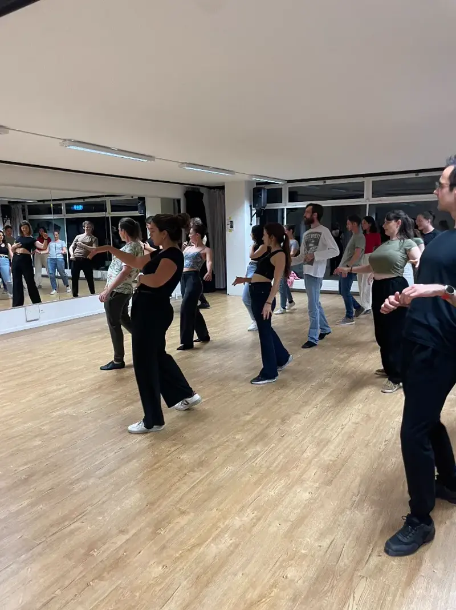

Curriculum · not on the timetable right now
Bachata Beginner 2
The rung between your first figures and the Sensual track: impulse energy, your first bodyroll, real partnerwork tension, and the Dominican footwork that gives a social dance its play.
- Day & time
- Not currently on the weekly timetable
- Level
- ~4–8 months of dance classes, or straight out of Beginner 1
- Language
- English
- Entry
- Ask us and we will tell you when the next block opens

What you will learn
Bachata is built on 10 fundamental techniques of leading and following, taught across the beginner curriculum in your first year of dance classes. Beginner 2 and 3 then open the door to Bachata Sensual.
-
Impulse energy
Leading with a short impulse that your partner carries through the movement, instead of steering with the arms.
-
Bodyroll
Your first sensual body movement: a wave through chest, ribs, and hips, drilled solo before it enters partnerwork.
-
Partnerwork tension
The elastic tension between partners that makes a lead readable without any force.
-
Cuddle and hammerlock positions
Two positions you will meet on every social floor, entered and left safely with the connection intact.
-
Dominican footwork
Traditional Dominican footwork that trains your rhythm and gives you something to play with inside a song.
Beginner 2 is where Bachata Sensual begins. From here, Beginner 3 adds the caída, torsion, and pendulum energy.
Is this your class?
“My basic is solid, my turns are still messy.”
That is exactly this level: roughly 4 to 8 months of classes, or a finished Beginner 1 block. Because Beginner 2 is not running this season, tell us at a trial and we place you in whichever room is closest. The weekly schedule shows what is open.
“I am just starting out.”
Begin with Bachata Beginner 0, Mondays 19:30. It is the only beginner level running this season, and it starts from the very first step. The beginner guide helps you choose.
Not sure? Book a free trial and we will place you.
How a class works
Sixty minutes, one skill, many partners.
-
01
Warm up & review
Shake off the day, settle in, and revisit what the room learned last week.
-
02
The skill of the week
One movement, broken down solo: mechanics first, so it is clean and controlled.
-
03
Into partnerwork
The same skill inside a combination you can take to any social.
-
04
Rotate & dance
Partners rotate through the class, so you leave having danced with everyone.
Meet your teachers

Where this course leads
- Beginner 0 Mondays 19:30
- Beginner 1 Curriculum only · not scheduled
- Beginner 2 Curriculum only · you are here
- Beginner 3 Tuesdays 19:30
- Sensual Foundation Wednesdays 19:30
- Sensual Improver Wednesdays 20:30
- Sensual Intermediate Thursdays 19:30
- Sensual Intermediate Advanced Thursdays 20:30
Want this level next?
Beginner 2 is not on the timetable this season. Come to a free trial and we place you in the class that fits today, and we will tell you the moment this level opens a block.
Every course runs as an 8-week block · 15% off your first sign-up · Student discount · No subscription
Good questions
Do I need any experience?
Yes, a little. Beginner 2 assumes roughly 4 to 8 months of Bachata: a comfortable basic, timing, and your first turn patterns. Never danced before? Beginner 0 is the right start.
When does Beginner 2 run?
Not this season. We open a level when there are enough dancers sitting at it, so the honest answer is that it depends on demand. Tell us you want it. That is how the room gets built, and in the meantime we place you in Beginner 1 or Beginner 3, whichever suits your dancing today.
Do I need a partner?
No. Partners rotate throughout the class, so you dance with everyone. Most people come alone.
What should I wear?
Comfortable clothes you can move in and shoes that let you turn. Clean sneakers are perfect. Coming straight from work? A change of shirt, deodorant, and mints make the hour nicer for everyone. Our what-to-wear guide has the details.
What if I miss a week?
You can declare up to two planned absences at registration and one sick day per pass, and we extend your pass by that class day. The full policy is in our terms.